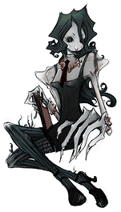
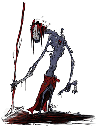
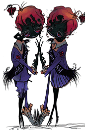

22 |
Criaturas |
 |
La lista siguiente enumera las criaturas encontradas en el juego:
Estudiantes Aunque a Jake le recuerdan a algunos de sus compañeros de clase, estas criaturas sombrías muestran muy poca humanidad. Ellos subsisten en las sombras, esperando atrapar a Jake si se acerca demasiado. Son muy inteligentes, o tal vez muy tímidos, para salir de las sombras y atacar a Jake.
Escurridizos Todos han visto cucarachas en la escuela, especialmente en la cafetería, pero esas alimañas nunca fueron tan grandes. Los escurridizos son cucarachas muy grandes que se esconden cuando la luz las alcanza. A diferencia de los estudiantes, no tienen habilidades de orientación y a menudo corren directo a la luz, friéndose en el piso en segundos.
 Profesora de inglés Retorcida variante de una de las profesoras de inglés, esta criatura demanda silencio en su clase y despedazará cualquier cosa que quiera interrumpir sus lecciones. Le gusta su aula oscura y cualquier luz desata en ella un estado de agitación desenfrenada.
 Limpiador Este custodio parece estar fregando cualquier luz que entra en la escuela. Silba una tonada inquietante y se le ve limpiando cosas en la cafetería escolar. Cada vez que se enciende una nueva fuente de luz, casi pareciera que le causa dolor.
 Monitores de los pasillos Estos chillones, confabuladores, soplones, furtivos y pequeños monitores de los pasillos siempre están buscando a los que están fuera del aula. Los chicos patrullan mientras las chicas buscan a los estudiantes perezosos. ¡Menos mal que Jake posee cierto don con las jovencitas!
Este profesor de gimnasia grandullón, gritón y alimentado con testosterona, no tolera a debiluchos en su clase. Saca pelotas de Dodgeball de su estómago y las lanza sobre cualquiera de los no deseados. Se necesita más luz que la que da la linterna de Jake para tumbar a este gigantón.
El último miembro del profesorado, discreto y vengativo, está sentado en su confortable oficina, tras su cómodo escritorio. Cualquier cosa que intente Jake será deshecha casi tan pronto como Jake la haga. Jake tiene que actuar rápido y usar los objetos tan ampliamente como sea posible para poder derrotar a esta criatura. |
 Entrenador
Entrenador
 Director
Director
 |
 |
 |